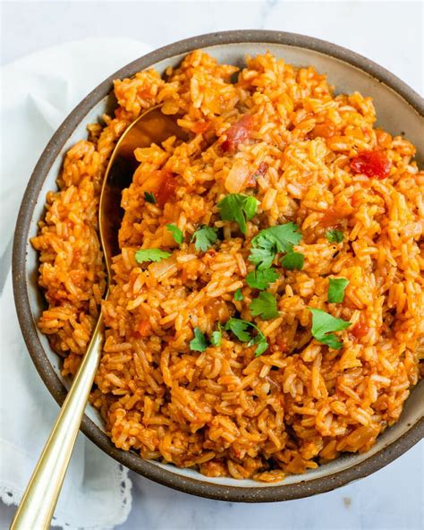

Mexican Rice

Description
A quick recipe to use up leftover chicken.
Ingredients
- Cooked chicken chopped into pieces
- 1 onion, chopped
- 1 pepper, chopped
- 6 mushrooms, chopped
- 1 tblsp olive oil
- 8cm piece of chorizo cut into small pieces
- 2 packets of Uncle Ben's spicy mexican rice
Steps
- Heat the oil in a wok or frying pan
- Fry the onion for 5 mins
- Add the pepper, mushrooms and chorizo and fry for another 5 mins
- Add the cooked chicken and cook long enough to reheat chicken
- Microwave rice according to packet instructions
- Stir rice into pan and serve